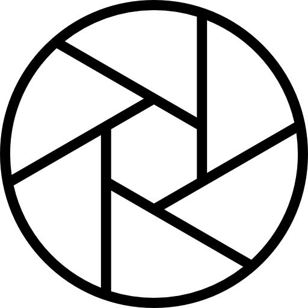

Shutter Speed: 1/60, 8", 1/2000 
Shutter Speed means the exposure time, in other words, the length of time a camera shutter is open to exposure light into the camera sensor.
If the Shutter speed is fast, it can help to freeze action completely.
If the shutter speed is slow, it can create an effect called "motion blur", where moving objects appear blurred along the direction of the motion.
When the shutter speed is slow, the picture is too bright because a lot of light comes in during that time.